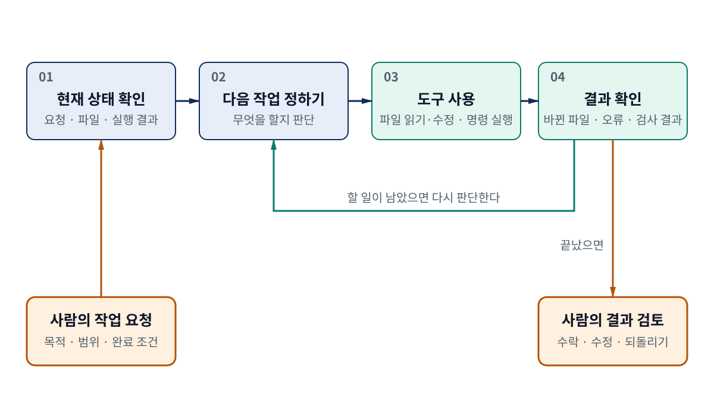
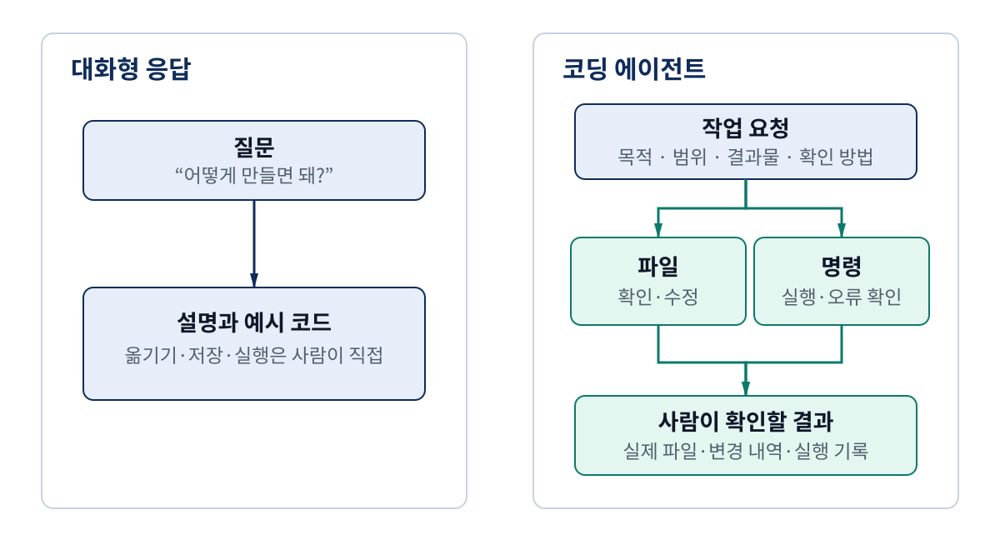
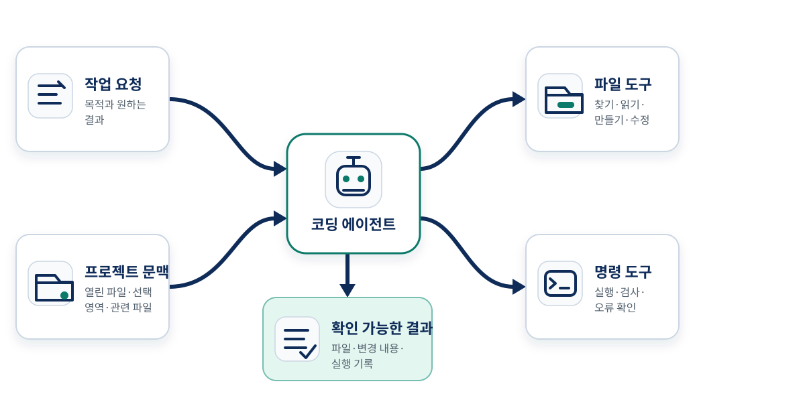
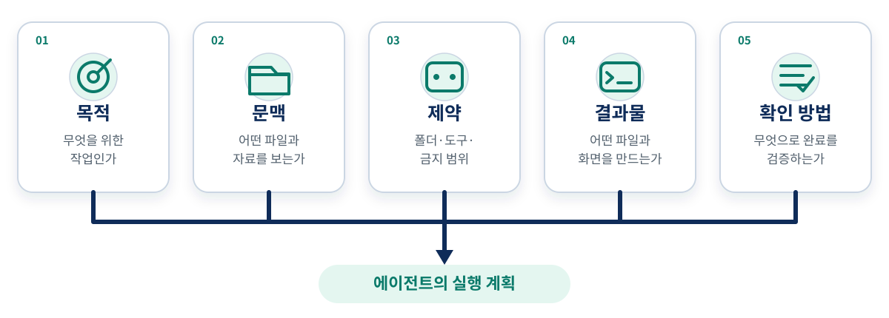
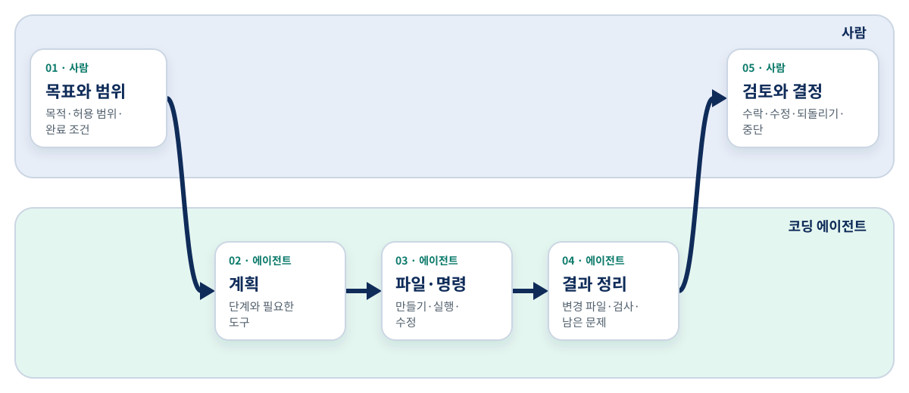
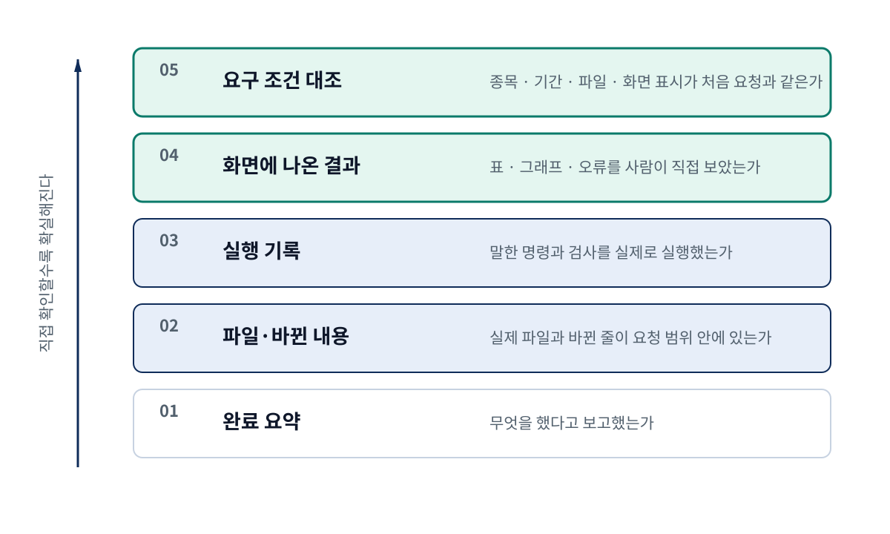
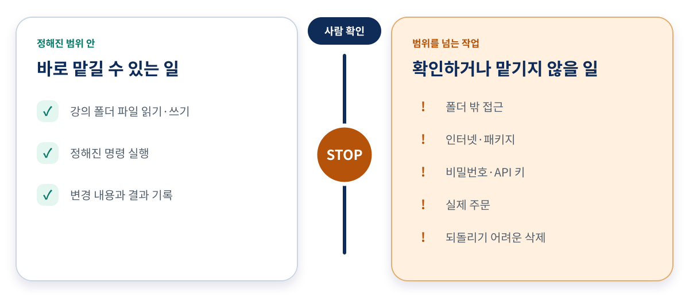

작업 방식
파일과 도구를 어떻게 이어 쓰는가
퀀트 트레이딩과 코딩 에이전트 입문
코딩 에이전트의 작업 방식부터 사람이 직접 확인할 일까지
과정 1 · 영상 2
코딩을 몰라도 무엇을 만들고 어떻게 확인할지는 정할 수 있다
에이전트에게는 파일 작업과 명령 실행을 맡길 수 있다
목적·범위·결과 판단은 사람이 맡는다
파일과 도구를 어떻게 이어 쓰는가
무엇을 어떻게 말해야 하는가
사람과 에이전트는 무엇을 맡는가
완료와 안전을 어떻게 확인하는가
첫째 · 작업 방식
요청에서 시작해 결과를 확인하며 다음 작업을 정한다

ReAct의 판단·행동·관찰 구조를 학습용으로 재구성했으며 Codex의 내부 설계도가 아니다
사람은 마지막에 바뀐 파일과 실행 결과를 검토한다
요청·열린 파일·앞선 실행 결과를 살핀다
필요한 파일 도구나 명령 도구를 골라 실행한다
성공과 오류를 확인하고 다음 작업을 다시 정한다
Yao 외의 ReAct 연구를 파일과 명령을 사용하는 작업에 맞게 풀어 쓴 학습용 설명
제품 이름보다 무엇을 보고 바꾸고 남기는지를 본다

Codex IDE와 prompting 공식 문서의 기능 구분을 초보자용으로 재구성
한 작업 안에서도 먼저 설명을 듣고 계획을 고친 뒤 파일 변경을 맡길 수 있다
| 구분 | 대화형 응답에 머무를 때 | 코딩 에이전트로 작업할 때 |
|---|---|---|
| 참고 정보 | 질문과 붙여 넣은 자료 | 질문·열린 파일·선택 영역·관련 파일 |
| 행동 | 설명·예시 코드 제안 | 파일 탐색·수정, 명령 실행·오류 수정 |
| 남는 결과 | 대화 내용 | 실제 파일·변경 내용·실행 기록 |
| 사람의 역할 | 코드를 옮기고 직접 실행 | 목표를 정하고 변경과 실행 결과를 검토 |
상세 리포트 표 1 · 제품 분류표가 아니라 두 사용 방식을 비교한 표
둘째 · 작업 요청
현재 열어 준 프로젝트와 전달한 정보 안에서 판단한다

Codex IDE 공식 문서의 기능을 초보자가 이해하기 쉬운 관계도로 재구성
명령 성공은 오류 없이 끝났다는 뜻이지 투자 목적이 옳다는 뜻은 아니다
| 에이전트의 행동 | 남아야 할 기록 | 사람이 확인할 질문 |
|---|---|---|
| 파일 찾기 | 읽은 파일·작업 범위 | 관계없는 폴더까지 보지 않았는가 |
| 파일 만들기·수정 | 새 파일·변경 전후 | 이름과 내용이 요청대로인가 |
| 명령 실행 | 실행한 명령·종료 결과 | 필요한 검사를 실제로 돌렸는가 |
| 오류 수정 | 실패 원인·수정 내용 | 겉으로 드러난 오류가 아니라 원인을 고쳤는가 |
| 완료 보고 | 파일·검사·남은 문제 | 보고와 실제 결과가 일치하는가 |
상세 리포트 표 2 · 행동을 사람이 확인할 수 있는 흔적과 연결
목적·문맥·제약·결과물·확인 방법을 함께 말한다

OpenAI의 프롬프트 작성 지침을 퀀트 실습용 질문으로 재구성
Python 문법을 몰라도 종목·기간·파일·완료 조건은 정할 수 있다
| 모호한 요청 | 빠진 내용 | 고쳐서 말할 내용 |
|---|---|---|
| KODEX 200 차트 만들어 줘 | 종목코드·기간·저장 위치·완료 조건 | 069500, 기간, CSV·노트북, 표·종가 그래프를 지정한다 |
| 알아서 좋은 방식으로 해 줘 | 데이터 경로·파일 구조 | 현재 작업 폴더만 쓰고 계획부터 설명하게 한다 |
| 됐으면 알려 줘 | 완료 확인 기준 | 파일·명령·결과·남은 한계를 보고하게 한다 |
상세 리포트 표 3 · 실제 데이터 수집은 영상 4에서 진행
원하는 결과와 확인 방법을 말하면 Python 문법을 몰라도 된다
막연한 부탁
종목코드·기간·저장 위치·완료 조건이 없다
확인 가능한 작업 요청
강의 폴더만 사용하고 계획·파일·명령·결과·한계를 보고한다
이 차시에서는 요청을 설계하고 영상 4에서 같은 요청을 실제로 수행한다
셋째 · 역할 분담
시작과 마지막 판단은 사람에게 있다

OpenAI의 검토 권고와 AIML Quant의 초보자용 역할 구분을 결합
에이전트가 남긴 기록은 사람의 검토를 돕는 근거다
| 판단과 작업 | 사람이 책임질 일 | 에이전트가 도울 일 |
|---|---|---|
| 목표 | 종목·기간·결과물 정하기 | 실행 단계 제안 |
| 범위 | 허용할 폴더·명령 정하기 | 범위 안에서 파일·도구 사용 |
| 구현 | 금융 가정·완료 조건 확인 | 코드·파일 초안과 오류 수정 |
| 검증 | 요청·데이터·투자 목적과 대조 | 실행 기록·검사 결과 정리 |
| 최종 결정 | 수락·수정·되돌리기·중단 | 후속 요청에 따라 재작업 |
상세 리포트 표 4 · 사람과 에이전트의 책임을 다섯 단계로 구분
실행 성공과 투자 판단의 타당성은 서로 다른 문제다
넷째 · 확인과 권한
파일에서 요구 조건까지 한 단계씩 대조한다

Codex 공식 문서의 변경 검토·명령 기록·테스트 결과 권고를 초보자용 순서로 재구성
“완료했습니다”는 결과를 찾기 위한 요약일 뿐이다
요청한 파일이 실제로 있고 변경 내용이 범위 안에 있는가?
명령을 실제로 실행했고 표·그래프·오류를 내가 볼 수 있는가?
종목·기간·파일 형식·표시 내용이 처음 요청과 같은가?
강의 폴더 안의 필요한 일만 먼저 허용한다

제품의 세부 설정값이 아니라 이번 강의의 안전 원칙을 보여 주는 개념도
권한이 넓을수록 결과를 확인하고 되돌리기 어려워진다
정해진 범위 안
범위를 넘는 작업
정리
파일과 도구를 사용하고 결과를 보며 다음 작업을 정한다
목적·문맥·제약·결과물·확인 방법을 함께 말한다
방향과 범위를 정하고 파일·실행 결과·투자 의미를 확인한다